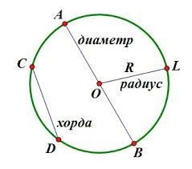

Окружность и круг
Круг-одна из важнейших фигур в нашей жизни. Представьте, без круга вы бы
не смогли прочитать написанный здесь материал, ведь с помощью него
построена вся наша цивилизация, бесчисленные индустрии! Так давайте изучим
эту фигуру ближе.
Если говорить о определениях, то: круг - это геометрическая фигура,
состоящая из всех точек плоскости ограниченных окружностью.
Здесь появляется интересное слово – окружность. Что же это?
Окружность – геометрическая фигура, состоящая из всех точек
плоскости удаленных на одинаковое расстояние от данной точки. Данная точка
называется центром окружности. В частности ее обозначают буквой О.
Круг состоит из разных отрезков:

Здесь один из самых важных отрезков- радиус окружности, с помощью
которого определяется радиус круга. Радиус окружности – это отрезок,
который соединяет центр окружности и любую точку на ней. Общепринятое
обозначение радиуса — латинская буква R. Радиус круга-отрезок,
соединяющий центр окружности с любой точкой, лежащей на окружности. Для
нахождения длины окружности, стоит воспользоваться следующим уравнением:
C=2πR, где C-длина окружности.
Попробуйте решить следующие задачи самостоятельно:
- Найти длину окружности, радиус которой равен 5 см.
- Найдите радиус окружности, длина которой равна 30π.
Ответы:
- 10π.
- 15.